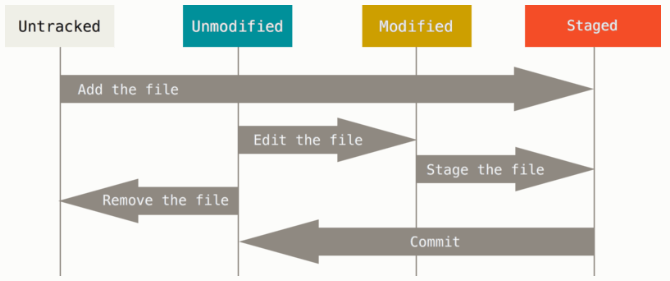

Basic
取得一個倉儲 (repository)
你有兩種主要方法來取得一個 Git 倉儲。 第一種是將現有的專案或者資料夾匯入 Git； 第二種是從其它伺服器克隆（clone）一份現有的 Git 倉儲。
在現有資料夾中初始化倉儲
若你打算使用 Git 來追蹤（track）現有的專案，只需要進入該專案的資料夾並執行：
$ git init
這個命令將會建立一個名為 .git 的子資料夾，其中包含 Git 所有必需的倉儲檔案，也就是 Git 倉儲的骨架。 到現在這步驟為止，倉儲預設沒有追蹤任何檔案。
接下來你可以通過多次 git add 指令來追蹤完所有你想要追蹤的檔案，然後執行 git commit 提交：
$ git add *.c
$ git add LICENSE
$ git commit -m 'initial project version'
克隆現有的倉儲
克隆倉庫的命令格式是 git clone [url]。 例如：若你想克隆名為 libgit2 的 Git linkable library，可以執行下列命令：
$ git clone https://github.com/libgit2/libgit2
紀錄變更到版本庫中
現在你的手上有了一個貨真價實的 Git 版本庫和這個專案中所有檔案的檢出（checkout）或工作複本（working copy）， 每當你修改檔案到一個你想記錄它的階段時，你就需要提交（commit）這些變更的快照到版本庫中。
請記住，你工作目錄下的每個檔案不外乎兩種狀態：已追蹤、未追蹤。「已追蹤」檔案是指那些在上次快照中的檔案：它們的狀態可能是「未修改」、「已修改」、「已預存（staged）」； 「未追蹤」則是其它以外的檔案——在工作目錄中，卻不包含在上次的快照中，也不在預存區（staging area）中的任何檔案； 當你第一次克隆（clone）一個版本庫時，所有檔案都是「已追蹤」且「未修改」，因為 Git 剛剛檢出它們並且你尚未編輯過任何檔案。
隨著你編輯某些檔案，Git 會視它們為「已修改」，因為自從上次提交以來你已經更動過它們； 你預存（stage）這些已修改檔案，然後提交所有已預存的修改內容，接著重覆這個循環。

檢查你的檔案狀態
git status 命令是用來偵測哪些檔案處在什麼樣的狀態下的主要工具； 如果你在克隆之後直接執行該命令，應該會看到類似以下內容：
$ git status
On branch master
Your branch is up-to-date with 'origin/master'.
nothing to commit, working directory clean
這意味著你有一個乾淨的工作目錄——換句話說，已追蹤的檔案沒有被修改； Git 也沒有看到任何未追蹤檔案，否則它們會在這裡被列出來；
假設你在專案中新增一個檔案，例如：一個簡單的 README 檔案； 如果該檔案先前並不存在，執行 git status 命令後，你會看到未追蹤檔案：
$ echo 'My Project' > README
$ git status
On branch master
Your branch is up-to-date with 'origin/master'.
Untracked files:
(use "git add <file>..." to include in what will be committed)
README
nothing added to commit but untracked files present (use "git add" to track)
你可以看到新增檔案 README 尚未被追蹤，因為它被列在輸出訊息的「Untracked files」欄位下方； 基本上「未追蹤」表示 Git 發現這個檔案在上次的快照（提交）中並不存在；Git 並不會將此檔案納入你的提交快照，除非你明確地告訴 Git 要這麼做；
追蹤新的檔案
要開始追蹤一個新的檔案，可以使用 git add 命令； 要開始追蹤 README 檔案，你可以執行：
$ git add README
如果再次執行檢查狀態命令
$ git status
On branch master
Your branch is up-to-date with 'origin/master'.
Changes to be committed:
(use "git reset HEAD <file>..." to unstage)
new file: README
git add 的當下所加進來的檔案版本就會被記錄在歷史快照中；
預存修改過的檔案
讓我們修改一個已追蹤檔案； 假設你修改了一個先前已追蹤的檔案 CONTRIBUTING.md，接著再次執行 git status，你會看到類似以下文字：
$ git status
On branch master
Your branch is up-to-date with 'origin/master'.
Changes to be committed:
(use "git reset HEAD <file>..." to unstage)
new file: README
Changes not staged for commit:
(use "git add <file>..." to update what will be committed)
(use "git checkout -- <file>..." to discard changes in working directory)
modified: CONTRIBUTING.md
CONTRIBUTING.md 檔案出現在「Changes not staged for commit」欄位下方——代表著位於工作目錄的已追蹤檔案已經被修改，但尚未預存；要預存該檔案，你可執行 git add 命令； git add 是一個多重用途的指令——用來「開始追蹤」檔案、「預存」檔案以及做一些其它的事。 現在，讓我們執行 git add 將 CONTRIBUTING.md 檔案預存起來，並再度執行 git status：
$ git add CONTRIBUTING.md
$ git status
On branch master
Your branch is up-to-date with 'origin/master'.
Changes to be committed:
(use "git reset HEAD <file>..." to unstage)
new file: README
modified: CONTRIBUTING.md
這兩個檔案目前都被預存，而且將會成為你下次提交的內容； 此時，假設在提交前你想起要對 CONTRIBUTING.md 再做一個小修改，然後，當我們再次執行 git status：
$ vim CONTRIBUTING.md
$ git status
On branch master
Your branch is up-to-date with 'origin/master'.
Changes to be committed:
(use "git reset HEAD <file>..." to unstage)
new file: README
modified: CONTRIBUTING.md
Changes not staged for commit:
(use "git add <file>..." to update what will be committed)
(use "git checkout -- <file>..." to discard changes in working directory)
modified: CONTRIBUTING.md
見鬼了？ 現在 CONTRIBUTING.md 同時被列在已預存「及」未預存。 這怎麼可能？ 原來 Git 在你執行 git add 命令時，的確將當時的檔案內容預存起來； 如果你現在提交，最後一次執行 git add 命令時，那個當下的 CONTRIBUTING.md 的版本會被提交，而不是在提交時你在工作目錄所看到的檔案版本被提交； 如果你在 git add 後修改檔案，你必需再次執行 git add 預存最新版的檔案：
$ git add CONTRIBUTING.md
$ git status
On branch master
Your branch is up-to-date with 'origin/master'.
Changes to be committed:
(use "git reset HEAD <file>..." to unstage)
new file: README
modified: CONTRIBUTING.md
簡潔的狀態輸出
雖然 git status 輸出內容相當全面，但也相當囉嗦； Git 另外提供一個簡潔輸出的選項，因此你可以以一種較精簡的方式來檢視你的修改； 如果你執行 git status -s 或 git status --short，你可以從該命令得到一個相當簡單的輸出內容：
$ git status -s
M README
MM Rakefile
A lib/git.rb
M lib/simplegit.rb
?? LICENSE.txt
未追蹤的新檔案在開頭被標示為 ??、被加入預存區的新檔案被標為 A、已修改檔案則是 M 等等。 標記有二個欄位——左邊欄位用來指示「預存區」狀態，右邊欄位則是「工作目錄」狀態。 所以在這個範例中，在工作目錄中的檔案 README 是已修改的，但尚未被預存；而 lib/simplegit.rb 檔案則是已修改且已預存的； Rakefile 則是曾經修改過也預存過，但之後又再次修改，所以總共有二次修改，一個有預存一個沒有。
忽略不需要的檔案
通常你會有一類檔案不想讓 Git 自動加入，也不希望它們被顯示為未追蹤， 這些通常是自動產生的檔案，例如：日誌檔案或者編譯系統產生的檔案； 在這情況下，你可以新建一個名為 .gitignore 的檔案，在該檔中列舉符合這些檔名的模式（pattern）。 以下是一個 .gitignore 範例檔內容：
$ cat .gitignore
*.[oa]
*~
編寫 .gitignore 檔案的模式規則如下：
- 空白列，或者以 # 開頭的列會被忽略。
- 可使用標準的 Glob 模式。
- 以斜線（/）開頭以避免路徑遞迴。（譯注：只忽略特定路徑；如果不以斜線開頭，則不管同名檔案或同名資料夾在哪一層都會被忽略。）
- 以斜線（/）結尾代表是目錄。
- 以驚嘆號（!）開頭表示將模式規則反向。
Glob 模式就像是 Shell 所使用的簡化版正規運算式（regular expressions），以下是另一個 .gitignore 範例檔案：
# 不要追蹤檔名為 .a 結尾的檔案
*.a
# 但是要追蹤 lib.a，即使上面已指定忽略所有的 .a 檔案
!lib.a
# 只忽略根目錄下的 TODO 檔案，不包含子目錄下的 TODO
/TODO
# 忽略 build/ 目錄下所有檔案
build/
# 忽略 doc/notes.txt，但不包含 doc/server/arch.txt
doc/*.txt
# 忽略所有在 doc/ 目錄底下的 .pdf 檔案
doc/**/*.pdf
提示
如果你的專案想要有個好開頭，GitHub 在 https://github.com/github/gitignore 中針對幾十種專案和程式語言維護了一個相當完整、好用的 .gitignore 範例檔案列表。
檢視已預存及未預存的檔案
如果 git status 命令提供的資訊對你來說太過簡略——你要想精確地知道你修改了什麼，而不只是那些檔案被修改——你可以使用 git diff 命令。
假設你再次編輯並預存 README 檔案，接著修改 CONTRIBUTING.md 檔案卻未預存它， 如果你執行 git status 命令，你會再次看到類似以下資訊：
$ git status
On branch master
Your branch is up-to-date with 'origin/master'.
Changes to be committed:
(use "git reset HEAD <file>..." to unstage)
modified: README
Changes not staged for commit:
(use "git add <file>..." to update what will be committed)
(use "git checkout -- <file>..." to discard changes in working directory)
modified: CONTRIBUTING.md
想瞭解尚未預存的修改，輸入不帶其它參數的 git diff：
$ git diff
diff --git a/CONTRIBUTING.md b/CONTRIBUTING.md
index 8ebb991..643e24f 100644
--- a/CONTRIBUTING.md
+++ b/CONTRIBUTING.md
@@ -65,7 +65,8 @@ branch directly, things can get messy.
Please include a nice description of your changes when you submit your PR;
if we have to read the whole diff to figure out why you're contributing
in the first place, you're less likely to get feedback and have your change
-merged in.
+merged in. Also, split your changes into comprehensive chunks if your patch is
+longer than a dozen lines.
If you are starting to work on a particular area, feel free to submit a PR
that highlights your work in progress (and note in the PR title that it's
這命令會比對「工作目錄」和「預存區」之間的版本， 然後顯示尚未被存入預存區的修改內容。
如果你想檢視你已經預存而接下來將會被提交的內容，可以使用 git diff --staged； 這個命令比對的對象是「預存區」和「最後一次提交」。
$ git diff --staged
diff --git a/README b/README
new file mode 100644
index 0000000..03902a1
--- /dev/null
+++ b/README
@@ -0,0 +1 @@
+My Project
很重要且需要注意的一點是 git diff 不會顯示最後一次提交後的所有變更——只會顯示未預存的變更； 這會讓人困惑，因為如果你預存了所有的變更，git diff 不會輸出任何內容。
提交你的修改
在目前情況下，假設你上次執行 git status 時，你看到所有檔案都已經被預存，因此你準備提交你的變更。 最簡單的提交方式是輸入 git commit：
$ git commit
這麼做會啟動你選定的編輯器，編輯完 commit 內容過後，當你關閉編輯器，Git 會利用這些提交訊息（註解和差異內容會被濾除）產生新的提交。
另一種方式則是在 commit 命令的 -m 選項後方直接輸入提交訊息，如下：
$ git commit -m "Story 182: Fix benchmarks for speed"
[master 463dc4f] Story 182: Fix benchmarks for speed
2 files changed, 2 insertions(+)
create mode 100644 README
463dc4f）、有多少檔案被更動，以及統計此提交有多少列被新增和被移除。
略過預存區
Git 提供了一個簡易的捷徑， 在 git commit 命令加上 -a 選項，使 Git 在提交前自動預存所有已追蹤的檔案，讓你略過 git add 步驟
移除檔案
要從 Git 中刪除一個檔案，你需要將它從已追蹤檔案中移除（更準確地說，是從預存區中移除），然後再提交； git rm 命令可完成此工作，它同時也會將該檔案從工作目錄中移除，如此它之後也不會身為未追蹤檔案而被你看到。
如果你僅僅是將檔案從工作目錄中移除，那麼它會被列在 git status 輸出內容的「Changed but not updated」（也就是「未預存」）欄位下面：
$ rm PROJECTS.md
$ git status
On branch master
Your branch is up-to-date with 'origin/master'.
Changes not staged for commit:
(use "git add/rm <file>..." to update what will be committed)
(use "git checkout -- <file>..." to discard changes in working directory)
deleted: PROJECTS.md
no changes added to commit (use "git add" and/or "git commit -a")
如果你接著執行 git rm，它會預存該檔案的移除動作：
$ git rm PROJECTS.md
rm 'PROJECTS.md'
$ git status
On branch master
Your branch is up-to-date with 'origin/master'.
Changes to be committed:
(use "git reset HEAD <file>..." to unstage)
deleted: PROJECTS.md
下一次提交時，該檔案將會消失而且不再被追蹤； 如果你修改了檔案且已經把修改內容加入索引中（譯注：「加入索引」和「預存」是同義詞），你必需使用 -f 選項才能強制將它移除； 這是一種為了避免已記錄的快照意外被移除後再也無法使用 Git 復原的保護機制。
另一個有用的技巧是保留工作目錄的檔案，但將它從預存區中移除； 換句話說，你或許想保留在磁碟機上的檔案但不希望 Git 再繼續追蹤它； 當你忘記將某些檔案加到 .gitignore 中而且不小心預存它的時候會特別用有，像是不小心預存了一個大的日誌檔案或者一堆 .a 已編譯檔案。 加上 --cached 選項可做到這件事：
$ git rm --cached README
移動檔案
Git 不像其它 VCS 系統，它並不會明確地追蹤檔案的移動； 如果你在 Git 中重新命名一個檔案，並不會有任何 Git 後設資料記錄這個動作以辨別你曾經重新命名過檔案； 然而 Git 可以在檔案移動後很聰明地將它們找出來——我們稍後會對偵測檔案的移動再多做一點說明。
因此 Git 有一個 mv 命令反而有點令人困惑； 如果你想要在 Git 中重新命名一個檔案，你可以執行以下命令：
$ git mv file_from file_to
事實上，如果你執行類似以下的動作然後檢視一下狀態，你將看到 Git 將該檔案視為一個重新命名過的檔案：
$ git mv README.md README
$ git status
On branch master
Your branch is up-to-date with 'origin/master'.
Changes to be committed:
(use "git reset HEAD <file>..." to unstage)
renamed: README.md -> README
其實，它相當於執行下列命令：
$ mv README.md README
$ git rm README.md
$ git add README